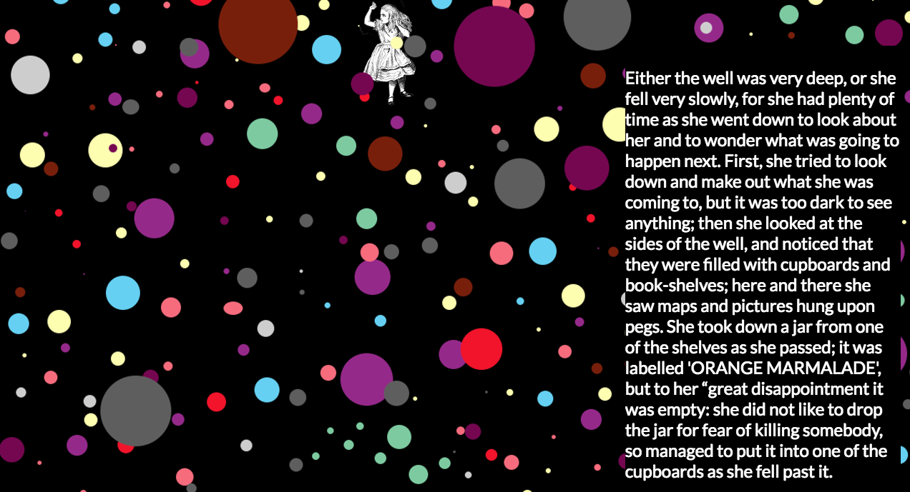

- 


Hi! I’m Camille, a junior web developer building websites in Philadelphia.
In August 2016, I graduated from a 3 month coding intensive with the New York Code and Design Academy as a Full Stack Developer. I now speak HTML5, CSS3, JavaScript, jQuery, Ruby and Ruby on Rails.
Before entering the program, I worked part-time at the Kislak Center for Special Collections, Rare Books and Manuscripts at the University of Pennsylvania. I was a student manager and the head assistant to the Reading Room. Having been an assistant manager and liaised between technical and public relations teams, I add value at a multidisciplinary level, connecting ideas where others might not. I have deployed an extensive range of websites spanning in the arts, food, and location services fields. Currently, I am an Associate Front End Developer at David's Bridal.
Major: English Literature Bachelor of Arts, Temple University
Honors: Phi Beta Kappa; Dean's List, six semesters; Dean's Scholar
Associate Front End Developer: David's Bridal
Freelance Developer: Shirley Road Productions
Part-Time Library Assistant/Student Organizer, Kislak Center for Special Collections, University of Pennsylvania, Philadelphia, PA (1/14-present)
Marketing Intern, Temple University Press, Philadelphia, PA (1/13-5/13)
Research Intern, Writers' Guild of Great Britain, London, UK (9/11-12/11)
Sous Chef, Provecho Catering LLC, Lansdowne, PA (9/13-present)